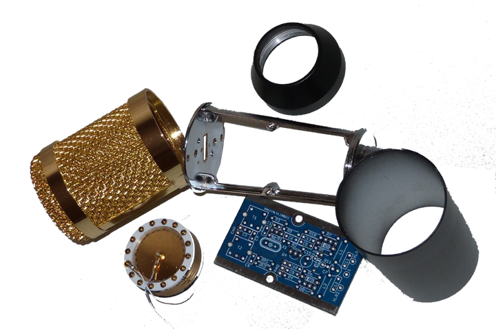
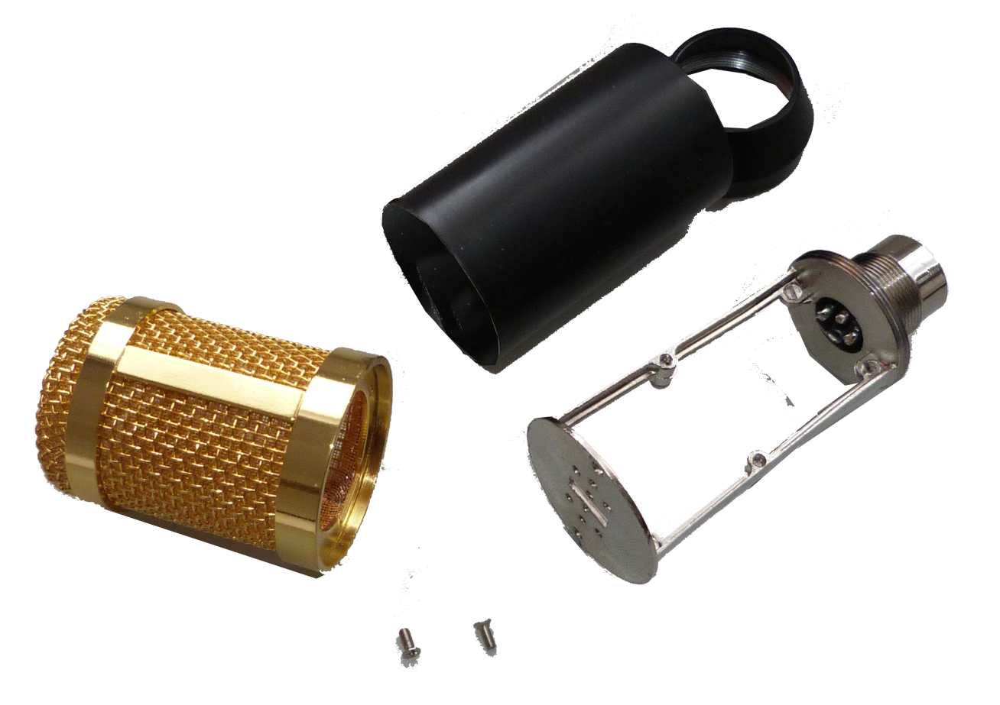
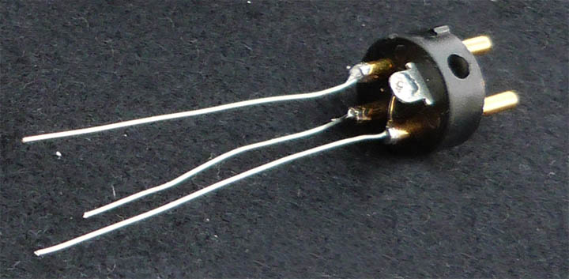
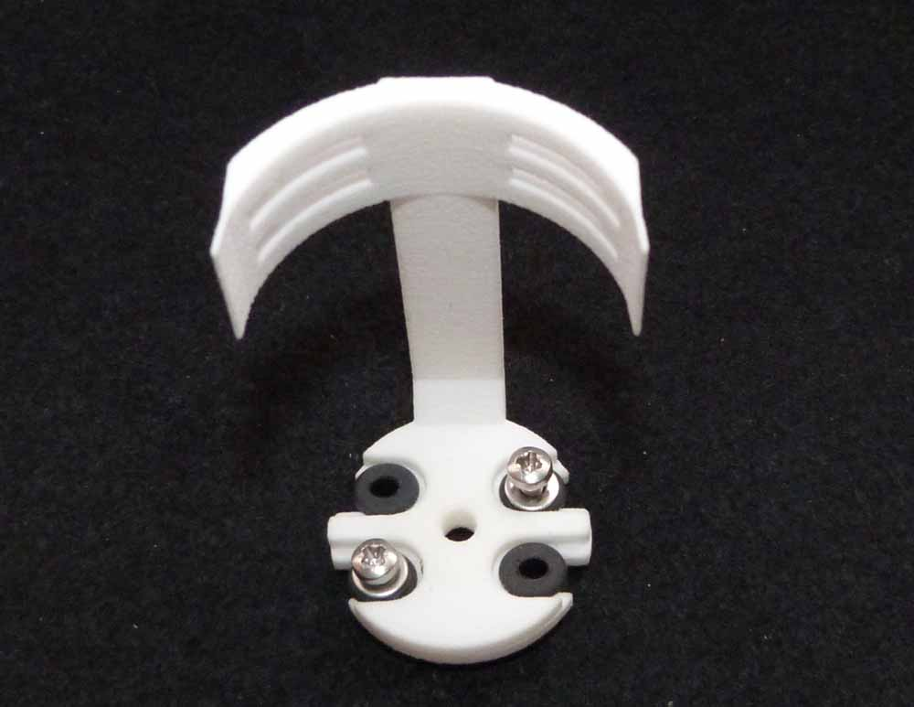
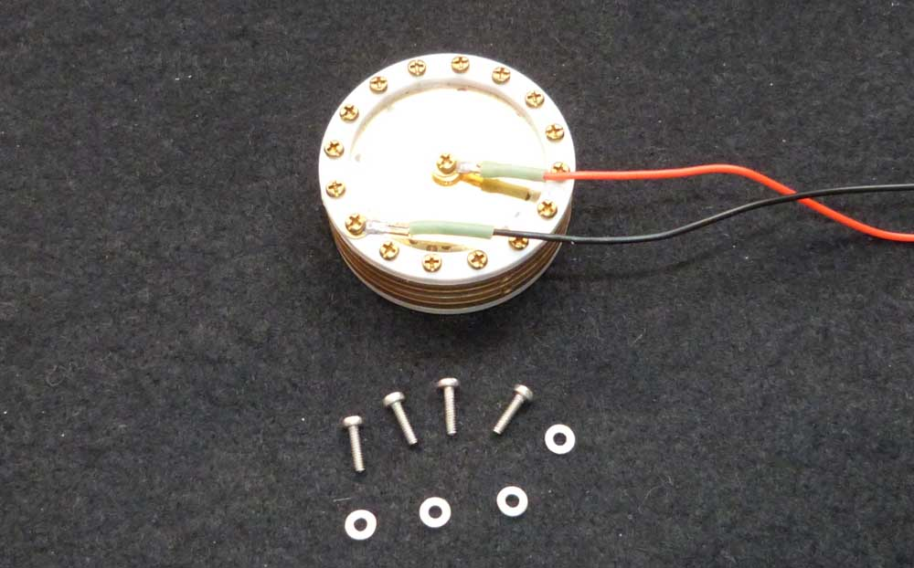
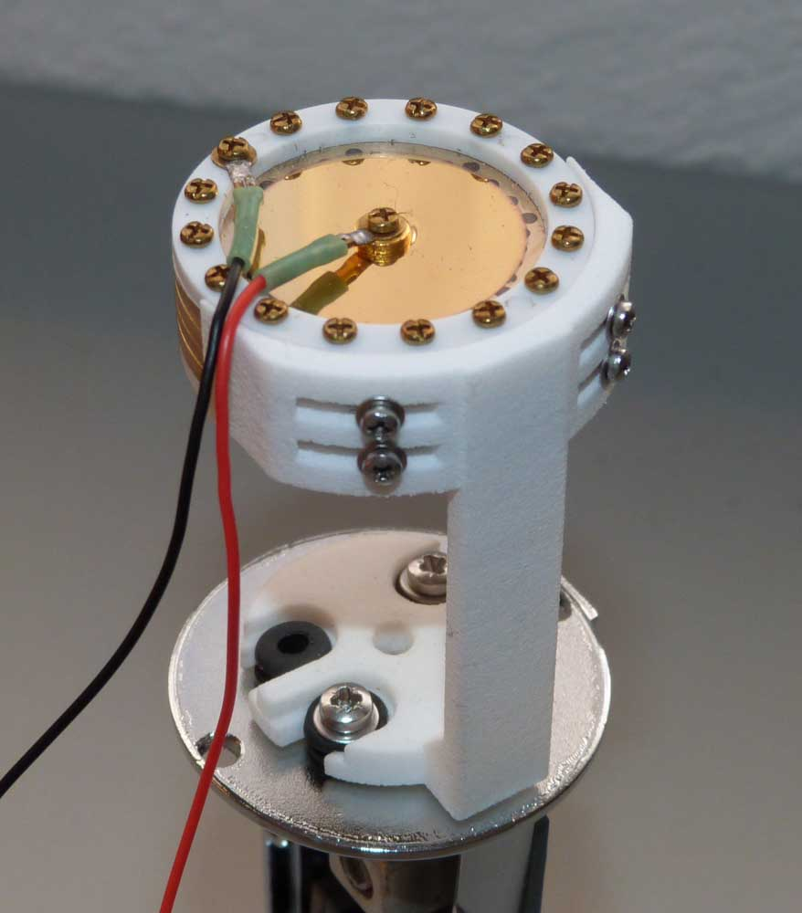
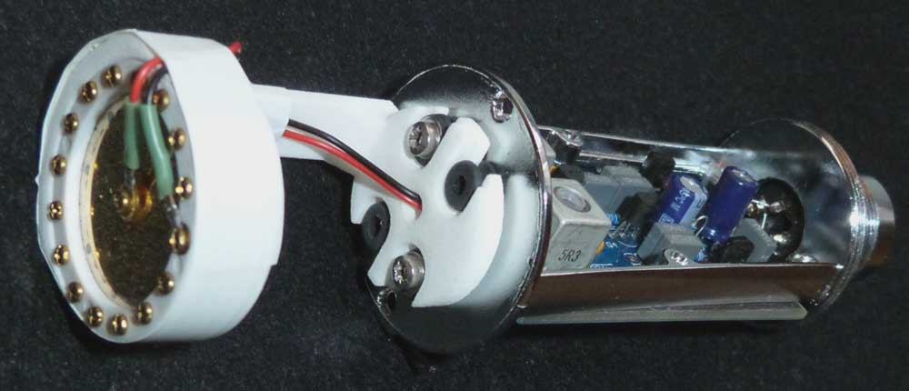
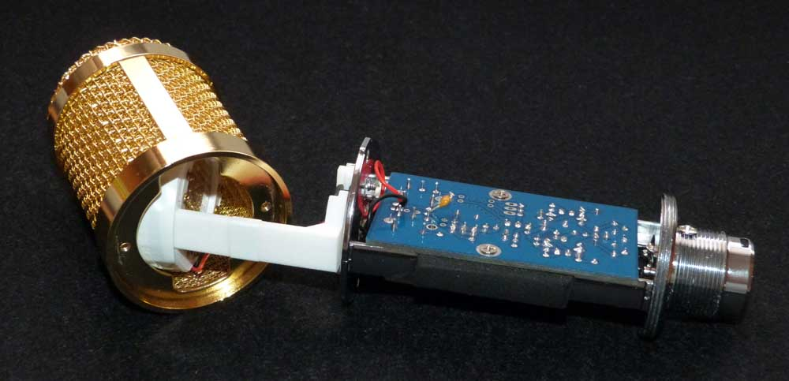
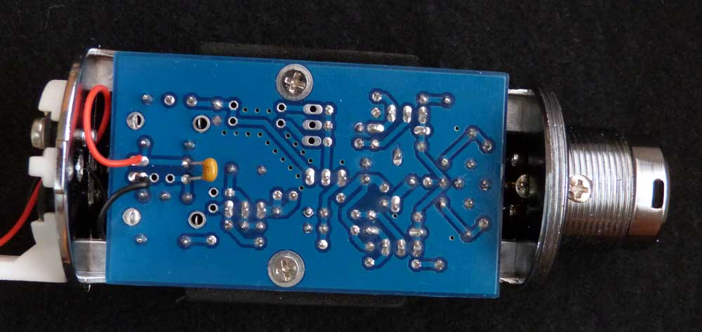

In addition to the PCB assembly, the following parts will be needed to complete the project...
• A BM800 microphone, to be used as a 'donor' body for the project..
• See
HERE for a suitable example
• A 34mm K67 type cardioid condenser microphone capsule...
• The type of capsule listed
HERE works well
• A 3D Printed mounting 'saddle' for the mic capsule (either 'end address' or 'side address', as required).
• See HERE to download the STL files to create a 3D printed 'end address' bracket, and HERE for the 'side address' version .. (thanks Tom!)
JLC3DP can supply 3D printed versions of these saddles at very reasonable prices...
• You will also need the following hardware:
• 4 x (M1.6 x 5mm) screws - together with an M1.6 washer for each
• 2 x (M2.5 x 8mm) screws - together with an M2.5 washer for each
• You can obtain the above items online from HERE
• 4 x (KO36851) rubber grommets
• You can obtain those grommets online from HERE
Disassemble the 'donor' BM800 microphone and remove the PCB assembly, together with the mic capsule assembly in the head basket.
Discard the original PCB assembly, together with the mic capsule and its mounting frame. (Retain the mic capsule assembly mounting screws - these can be used to secure the new PCB to the frame).
Remove the XLR connector from the body by unscrewing the single mounting screw. Remove any connecting wires already soldered to the XLR, and fit a 50mm length of 25 gauge tinned copper wire (TCW) - or equivalent - to each of the 3 XLR pin solder bucket connections.
Replace the XLR connector into the body and secure the mounting screw. Direct the 3 TCW connection wires into the appropriate locating holes of the completed project PCB, by offering up the PCB assembly. (Note that the order of the connections on the PCB will require the TCW connections to be 'crossed over').
Ensure that these connections are dressed so that the connections cannot short out.
Use the previously removed mic mounting screws to secure the PCB assembly to the frame, before soldering the 3 XLR TCW connections.


Take the new mic capsule mounting saddle or bracket (we are using an 'end address' bracket in this example) and slide 4 x mounting grommets into the slots in the base of the bracket.
You will also need 2 x 8mm M2.5 screws and washers, which are to be fitted diagonally into two of the bracket mounting holes.
The vast majority of BM800 microphones only have two of the original four mic bracket mounting holes tapped with an M2.5 thread.
Secure the mounting bracket to the mic frame, using these two tapped holes.
Before fitting the new mic capsule, it will probably be necessary to lengthen the two connecting wires, so that they can run the entire length of the bracket - through the centre hole - and be soldered onto the 'cap' holes on the PCB.
Take 4 x (M1.6x5mm) screws and fit a single M1.6 washer to each. Offer the capsule up to the slotted crescent on the bracket, and secure the 4 mounting screws as shown in the adjacent image.
Take care NOT to touch the actual capsule membrance during this operation - it is very fragile.



Take the two capsule connecting wires and run them through the centre hole in the base of the bracket.
Fit a length of insulating tape (white in this example) around the outside diameter of the mic capsule, to ensure that it cannot short out to the headbasket once installed.
Offer the mounted capsule bracket up to the headbasket at right angles, and once inside, rotate it through 90 degrees to align the capsule in parallel with the top face of the headbasket.
Re-fit the 2 original headbasket securing screws.
Strip back a length of insulation on both of the termination wires, and solder the exposed ends to the two terminals marked 'CAP' on the PCB. These are located on the edge of the PCB betwen the two inductor cans. It is probably easier to solder to the back face of the PCB, as shown in the image.
(It can also be easier to fit C4 on this reverse side as well).
This completes the assembly of the component parts. It now merely remains to calibrate the inductors to complete the project. This procedure is described on the 'Performance' page, which you can access from the appropriate button below...


